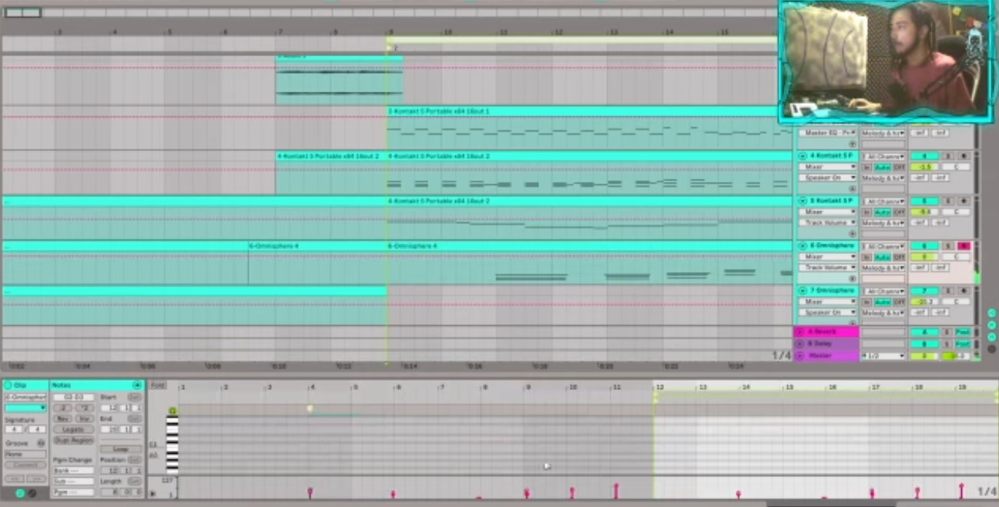
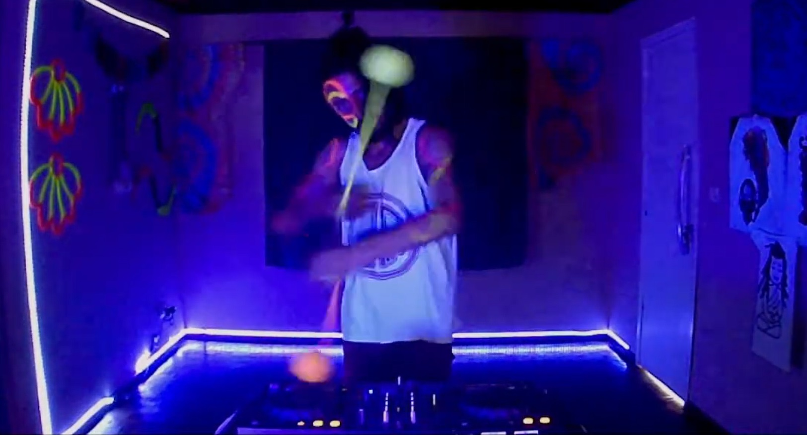

How it began on Twitch
During dark times in the pandemic, Tiago Sena (4i20) and the music production community on Twitch welcomed Natan and helped him start streaming his process in Portuguese.

A cozy corner of the internet where music, experiments and flow arts meet in live performance.
During dark times in the pandemic, Tiago Sena (4i20) and the music production community on Twitch welcomed Natan and helped him start streaming his process in Portuguese.
Overtime as Natan met a big friend who eventually became a lover (read the history page for context) with the support of the new found community and friends, Natan was asked to start streaming in English, he decided to go through his shyness and face that challenge.
Natan's music taste slowed down quite a lot, from the fast beats of psytrance, he started enjoying the slower genres: Trip hop and Downtempo, he shared the entire change process on Twitch, and his new community was very excited about it.
A lot of magical things happened quickly, Natan was very transparent with the situation he was facing at his house, and his community was very supportive of him during that time, as the community grew he started getting more support, until eventually one of his viewers, Jasper_Stevens, gifted him a laptop, which completely changed the direction of his life.
It was a major level up on everything he was doing, his stream quality got better, his music projects got more complex and he started editing videos, leading him to be able to work and invest into making his work even better


As time passed, Natan fell in love with Flow arts, the art of dance with object manipulation, and that gave a new dimension to his streams, playing music and adding the visuals with his hipnotizing dance style.
As he embraced the traveler life, going to the Netherlands, he started doing IRL type of streams, sharing his life and adventures on the other side of the ocean, showing more of the flow arts universe that he was experiencing
As he got back to Brazil at his hometown, he decided to change everything, investing in instruments and reinventing the format that he creates content, now as a live looper, he created a small universe for his Twitch stream
The temple is a place to relax, where calm music is the guidance of a cozy corner of the internet, where people can come to connect with like-minded beings and share their experiences with life, with vulnerability and honesty being the leading subjects on the stream
Come visit the Temple and allow yourself to slow down for a moment.